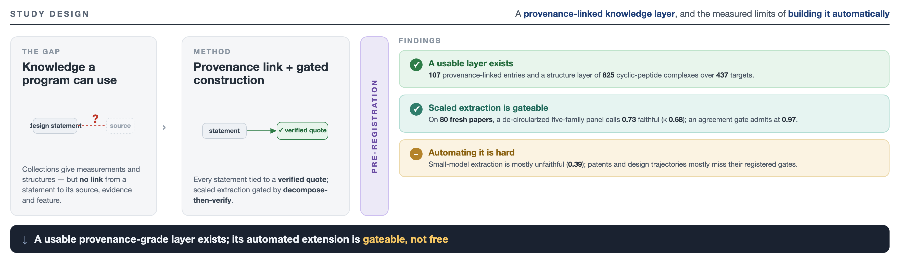

Design systems need more than measurements and structures: they need machine-usable knowledge — how chemistry sets permeability, how peptides sit in their targets, what earlier campaigns did and why. BioMate builds a provenance-linked knowledge layer where every statement is tied to its exact source, and extracts new knowledge with a pipeline rigorous enough to trust.

Results in brief
From text to usable rules
Existing collections give a designer data and structures, but not a design statement — "adding a hydrogen-bond donor and enlarging the ring lower permeability" — linked to its source, its evidence strength and the molecular feature it constrains. BioMate's layer provides exactly that, joining structure, property and prior-campaign knowledge in one schema with provenance on every entry.
Rigor is the hard part
Matching an exact quote proves where a sentence came from, not what it means. Scaling extraction naively produces thousands of records that mostly do not support the statement beside them. BioMate's pipeline pairs a frontier model with explicit, deterministic rules — one measured relation per statement, core developability properties only, no results cited from earlier work, no predictions, no off-scope endpoints — and then a multi-model committee gate for the meaning the rules cannot check.
Measured improvement
Under this rigorous, decompose-then-verify pipeline, statement-level extraction precision reaches a level that makes a scaled knowledge layer dependable rather than noisy — a substantial, measured improvement over a naive first generation, with inter-model agreement to match. Reliability comes from removing the checkable failures first and gating the rest.
Provenance you can audit
Every statement in the layer carries its source identity, exact quotation, evidence tier and the feature it constrains. That is what lets a generative system consume design knowledge as a prior it can trace — and what lets a scientist audit it. BioMate builds knowledge that is usable by a program and accountable to a person.
The knowledge layer is detailed in a companion manuscript (in preparation). Our published cyclic-peptide work — the decoder, the value-of-information scheduler and the benchmark framework — is open-access.
See all BioMate publications →